快速入门
LemmaLoom 是一款 macOS 应用，用于对文本进行质性分析和语法分析。你可以用它为文档中的文字编码，再结合文档的语法来审视这些编码。当然，你也可以只把 LemmaLoom 当作编码工具，或者只把它当作语法分析工具来用。不过，把质性分析和语法分析结合起来，你就能向自己的文档提出一些问题，而这些问题在不考虑语法的质性数据分析工具中可能较难提出。
LemmaLoom 附带一个名为“气候辩论”的示例项目，你可以导入它，借此了解应用中的各种工具和功能。本用户指南的大部分内容，以及快速入门这一整章，都以“气候辩论”项目为背景来举例和讲解。“气候辩论”项目由虚构的评论文章、专栏文章、演讲和其他媒体内容组成，例如一份报告和一段录制下来的电台辩论。如与真实人物或出版物雷同，纯属巧合。这些内容既然是虚构的，便不代表任何观点，也无意以任何方式说服读者。
在本章中，你将从零开始搭建“气候辩论”的雏形。起点是十一篇各种类型的虚构文本（评论文章、演讲、博客文章和专栏文章）。其中六篇出自气候活动人士之手，五篇出自气候怀疑论者之手。本指南中的插图展示的都是已完成的项目。你可以通过文件 ▸ 导入 ▸ 示例项目导入示例项目，跟着本指南操作。导入的示例项目使用哪种语言，取决于你在 LemmaLoom 中使用的界面语言，可能是英语、德语或简体中文（中国大陆）。请参阅第 1 章“简介”中的支持的语言。示例项目中已经建好了前几个步骤中的属性、文档集和编码。因此，使用示例项目时，请直接跳到用透镜阅读。读到创建编码时，也请跳过这一节。
在本指南中，你也可以改为导入自己的一组文本。能导入哪些类型的文件，第 4 章“导入资料”有详细介绍。凡是步骤中提到“气候辩论”里的具体文档、立场或文字片段，都可以按需换成你自己的材料。
主窗口
第一次启动 LemmaLoom 时，屏幕上会显示一个分为三栏的窗口。关于界面的全部内容，可以阅读第 2 章“开始使用”中的认识主窗口。此时，左侧的导航栏是空的，右侧检查器的各个标签页图标已停用。中间一栏显示标题 LemmaLoom 以及新建项目和示例项目两个按钮。
打开项目和文档以后，窗口是这个样子：
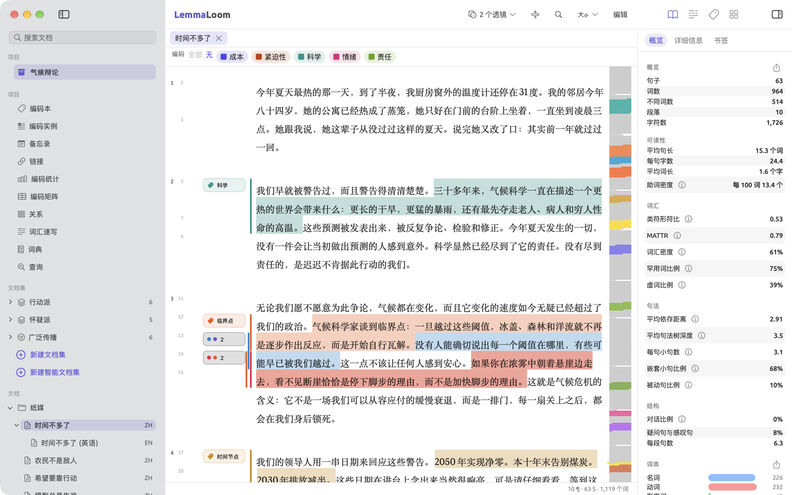
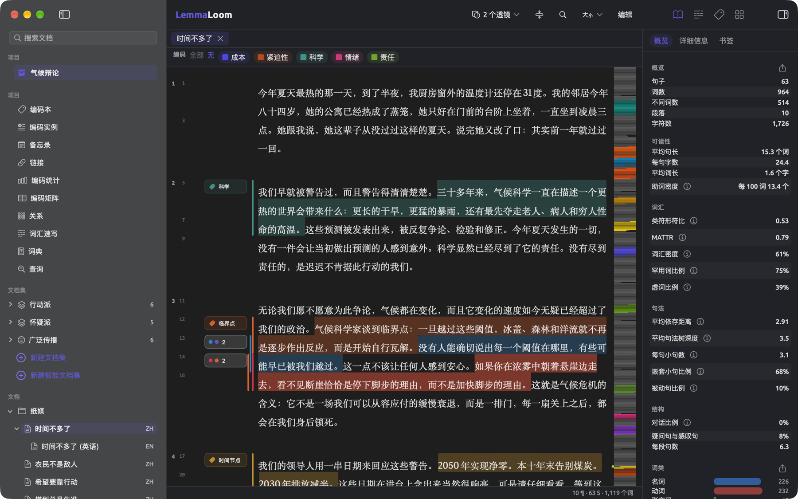
项目显示在左侧的导航栏中。第 3 章“项目与文档”更详细地介绍了项目的结构。在导航栏的项目下，有十个涵盖整个项目的详细视图，例如编码本、编码矩阵和查询。导航栏再往下依次是文档集、文档和标签（见第 8 章“文档集、分组、标签和属性”）。你可以通过编辑 ▸ 查找文档（⇧⌘F）在当前项目中查找文档；也可以直接在导航栏顶部的搜索文档中输入想找的文档名称。
文档和详细视图以标签页的形式在窗口中间的阅读器里打开。阅读器顶部横贯着标题栏，其中有透镜菜单，以及用来查找和处理文本、调整文本和阅读器外观的功能。第 5 章“阅读与编辑”详细介绍了这些选项和功能。右侧的检查器显示当前标签页中文档的信息。检查器分为四个标签页（文本、语法、编码和多重模式），可以通过检查器右上角的按钮切换。第 10 章“文本检查器”、第 11 章“语法检查器”、第 13 章“编码分析”和第 14 章“速写空间”说明了这四个标签页显示的内容。
按钮已停用，要么是因为它与当前文档或标签页无关，要么是因为它暂时还不能使用（例如，透镜要等文档的索引过程完成后才能使用）。将鼠标指针悬停在任何已停用的按钮上，就能看到它被停用的原因，例如索引完成后即可使用透镜。
创建项目
一项研究的所有内容都放在一个项目中。项目是 LemmaLoom 中最上层的容器，其中保存着文档，以及你在处理这些文档时积累的数据。这些数据包括编码、备忘录、书签、文档集和查询。一般来说，一项研究的所有相关材料最好都放在同一个项目中。LemmaLoom 的跨项目分析能力有限，不过查询可以跨项目执行。第 3 章“项目与文档”中的跨项目工作一节说明了这类查询的工作方式。
属性记录关于文档的事实信息。属性可以是作者持有的立场、发表日期、你在哪里找到这份文档等等。你可以在创建项目时定义属性，也可以在之后的任何时候定义。关于如何使用属性，详见第 8 章“文档集、分组、标签和属性”中的属性。要跟着“气候辩论”项目一步步操作，你只需要属性“立场”，以便在本章后面比较行动派和怀疑派。
- 选取文件 ▸ 新建项目（⇧⌘N）。
- 在名称中输入
气候辩论。 - 在属性下点按添加属性。
- 在新出现的这一行的名称栏中输入
立场。 - 在旁边的菜单中选取选择器。选择器只接受你列出的值。这样，每个值的写法在不同文档之间就能保持一致。
- 在随即出现的栏中输入
行动派, 怀疑派, 中立。“中立”用于报道这场辩论而不站在任何一方的文档。 - 点按创建。
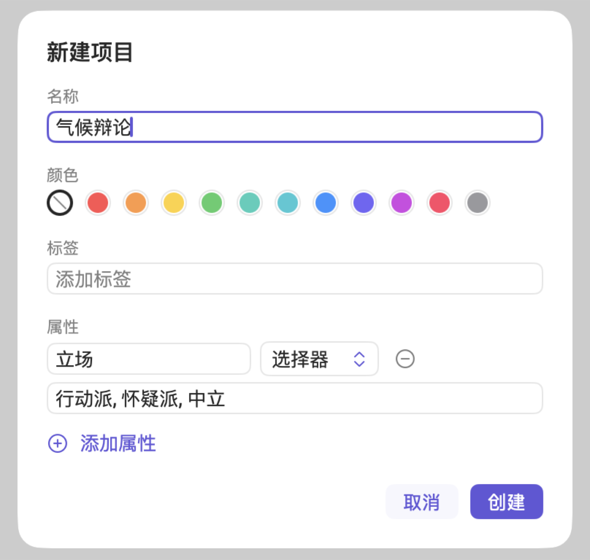
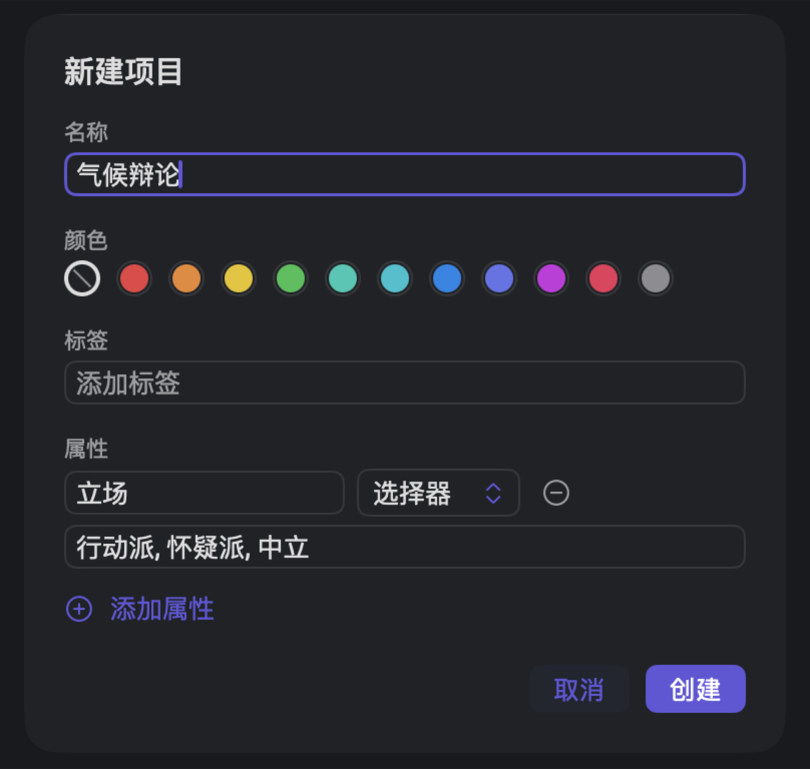
新项目会出现在导航栏的项目下，标题以粗体显示。粗体标题表示当前项目；导航栏中项目列表下方的所有内容都只与当前项目有关。
导入文本
- 选取文件 ▸ 导入 ▸ 文档（⇧⌘I）。
- 选择这十一份文本。要选择多个文件，请按住 ⌘ 键再点按。
- 点按打开。
- 导入文档对话框随即为第一个文件打开，右上角显示 1 / 11。检查名称（LemmaLoom 根据文件名填写），其他栏目保持原样。
- 点按导入。
- 对其余每个文件，对话框都会再打开一次。每次都点按导入；不想导入某个文件时，点按跳过。
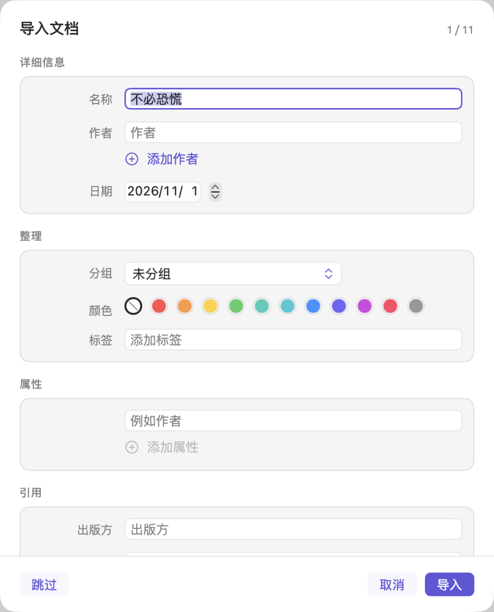
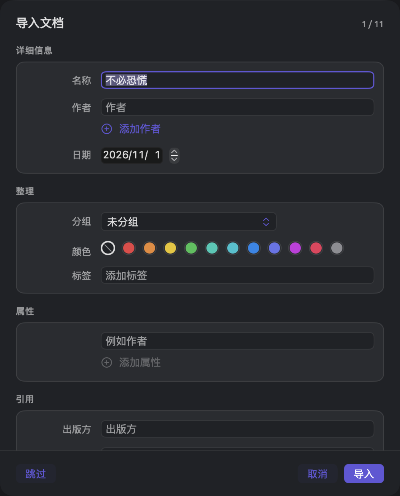
LemmaLoom 把这些文本列在文档下，并开始在后台为它们建立索引。建立索引时，LemmaLoom 先把每份文本切分成句子和词，然后为每个词找出它的词典形式，这种形式称为词元。LemmaLoom 还会确定哪个名词是哪个动词的宾语，以及句中词与词之间的其他各种依存关系。第 21 章“分析与索引”更详细地介绍了建立索引的过程。为方便起见，“气候辩论”中的所有文档都已预先建立索引。大型文档或媒体文件可能需要更长时间才能完成索引。电脑的硬件性能也会影响建立索引的速度。在硬件支持的情况下，LemmaLoom 会使用硬件加速。
文档正在建立索引时，标题显示为灰色，右边还有一个小小的进度环。进度环消失后，文档就已成功建立索引。如果想查看当前正在建立索引的所有文档，请选取窗口 ▸ 活动（⌥⌘0）。
在导入文档对话框中，可以为每个文档指定日期、分组、标签和语言，详见第 4 章“导入资料”中的“导入文档”对话框。那一章还说明了如何导入 PDF 文件、网页，以及录音和录像。
记录每份文本的立场
“立场”本来也可以在导入文档对话框中逐个文档指定。不过对于十一份文档来说，用属性窗口指定这个值，要比逐一指定省力得多。属性窗口可以批量设置值。
- 在项目下右键点按“气候辩论”，选取属性；或者选取项目 ▸ 属性。窗口会列出项目中的每个文档。
- 勾选六篇行动派文本旁边的复选框（“时间不多了”“来自气候罢课的信”“我们为什么封路”“农民不是敌人”“一位市长的承诺”和“希望要靠行动”）。
- 搜索所在的那一行这时显示已选择 6 个文档。在它旁边选取设置值 ▸ 立场。
- 在设置值对话框中选择“行动派”，然后点按应用。
- 取消勾选行动派文本的复选框，再勾选五篇怀疑派文本的复选框（“模型总是失准”“净零代价高昂”“不必恐慌”“转型谁来买单”和“科学从无定论”）。
- 再次选取设置值 ▸ 立场，选择“怀疑派”，然后点按应用。
- 关闭属性窗口。

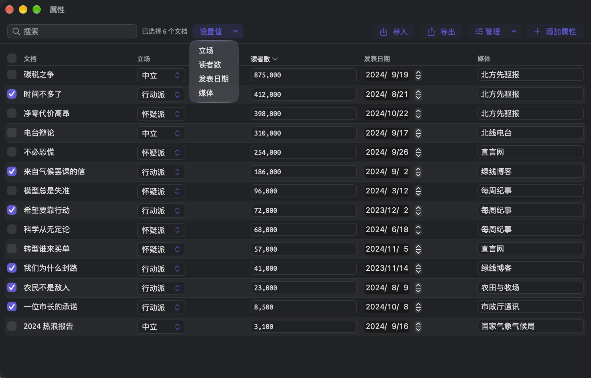
你也可以在检查器文本标签页的详细信息中更新当前文档的值。这种方式一次只修改一个文档。在属性窗口中进行搜索，可以限定设置值操作会影响哪些行。详见第 8 章“文档集、分组、标签和属性”中的为多个文档设置同一个值。
建立两个文档集
借助本章后面的关键词列表，你可以比较行动派文档和怀疑派文档的内容。这就需要双方各有自己的文档集，也就是归在同一个名称下的一组文档。
- 在文档下点按“时间不多了”，然后按住 ⌘ 键，依次点按其余五篇行动派文本。
- 右键点按其中一个选中的文档，选取添加到文档集 ▸ 从所选文档新建文档集。
- 新的文档集出现在文档集下，名称处于可编辑状态。输入
行动派，然后按下 Return 键。 - 用同样的方法选中五篇怀疑派文本，建立一个名为
怀疑派的文档集。
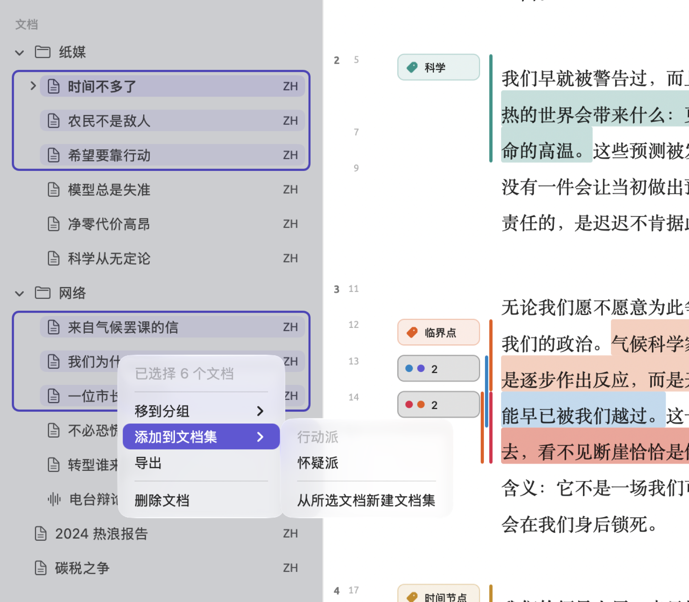
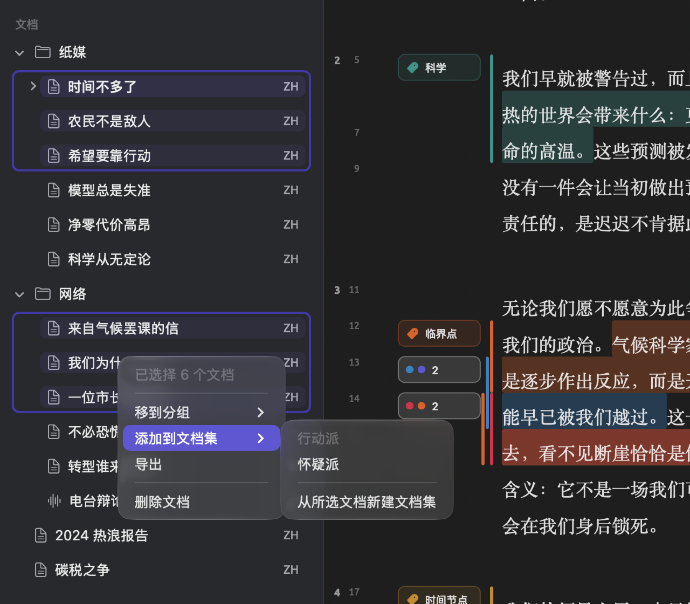
示例项目中的“广泛传播”包含“读者数”大于或等于 100,000 人的所有文档。这个文档集由规则决定，称为智能文档集。见第 8 章“文档集、分组、标签和属性”中的智能文档集。
用透镜阅读
在文档下点按“时间不多了”，就会打开它供你阅读。示例项目把它放在“纸媒”分组中。阅读器的左边距有两列数字，分别为文档中的段落和句子编号。阅读器右边缘是文档概览。它是一条彩色的滚动条，标示你在文档中的当前位置，以及从已启用的透镜（例如编码）来看文档内容的分布。将鼠标指针悬停在文档概览上，同样可以预览该位置的文字。
阅读器中内容的呈现方式由透镜控制。每个透镜按文本的某种特征为文本设置样式。第 6 章“透镜”对此有更多介绍，其中详细说明了所有可用的透镜及其标注。第一次查看文档时，编码和书签两个透镜已经启用，因此透镜菜单显示 2 个透镜。这两个透镜把你已有的标注呈现在文本上。例如，要启用一个基于语法分析的透镜，请按以下步骤操作：
- 点按标题栏中的 2 个透镜。
- 选取情态。
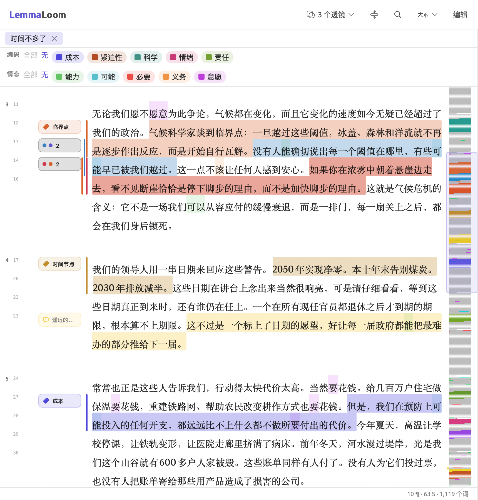
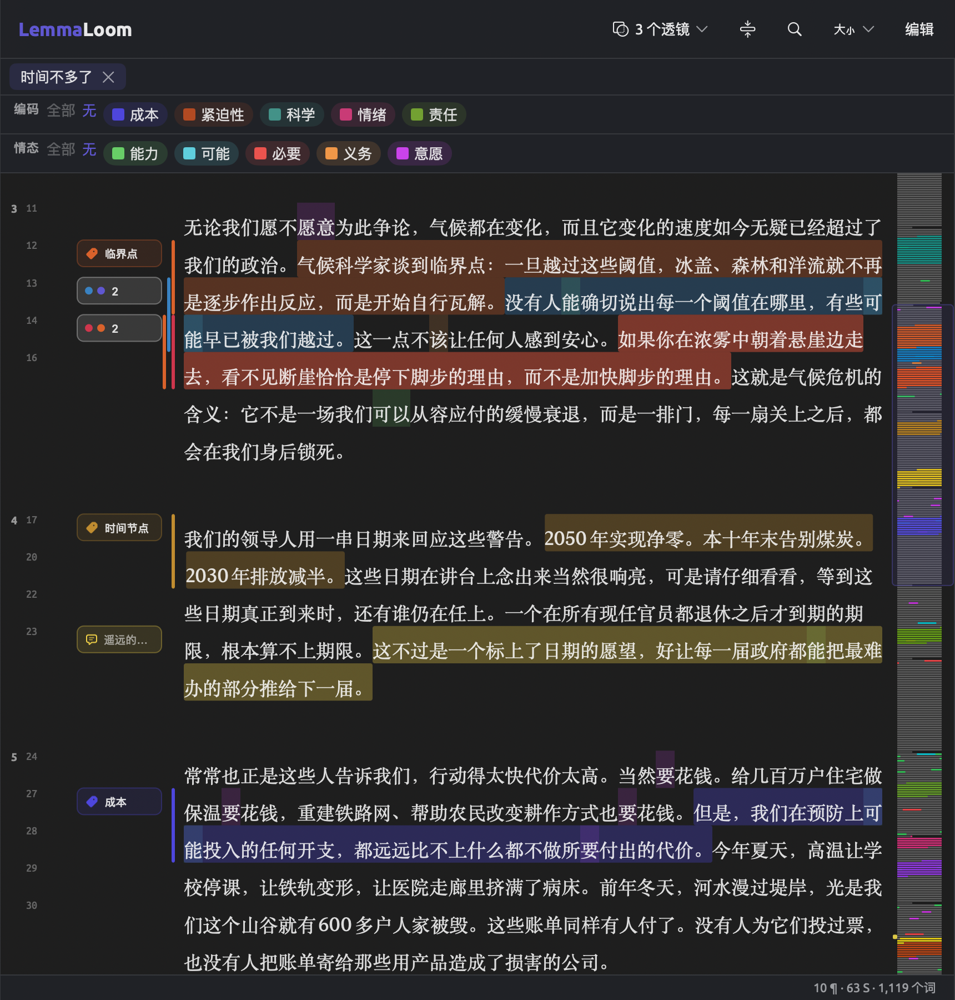
情态标注表示能力、必要、义务、可能和意愿的词。例如，在“时间不多了”中，“我们在预防上可能投入的任何开支”里的可能被标注为可能，而“没有人能确切说出每一个阈值在哪里”里的能被标注为能力。文本上方有一行代表各个标注项的彩色图例项，它们构成这个透镜的图例。点按其中任意一个图例项，对应的标注项就会停用，它的标注也会从文档中移除。再点按一次，就会恢复这个标注项及其在文档中的标注。
透镜菜单右边有一个按钮，它的悬停提示为仅显示透镜标注的句子。点按这个按钮，文档就会收缩，只显示含有已启用透镜所作标注的句子；再点按一次，即可展开全文。
创建编码
你可以为涉及某个话题或方面的文字赋予一个自己定义的编码（例如“紧迫性”）。一个项目的全部编码构成它的编码本。你可以把编码本看作一组形容词或想法，用来描述或突出项目中的细节。之后，你可以借助这些编码来回答你对项目中的文档可能提出的问题。通常，你会先想好要向文档提出哪些问题，再据此创建你认为有助于回答这些问题的编码。
下面的步骤会添加一个名为“紧迫性”的编码及其子编码“时间节点”。
- 在导航栏的项目下点按编码本。它会在一个标签页中打开。
- 点按编码列表底部的添加编码。
- 在新建编码对话框的名称中输入
紧迫性。 - 在颜色下点按一种颜色。
- 点按存储。
- 在列表中右键点按“紧迫性”，选取添加子编码。
- 在新建编码对话框的名称中输入
时间节点，选择一种颜色，然后点按存储。


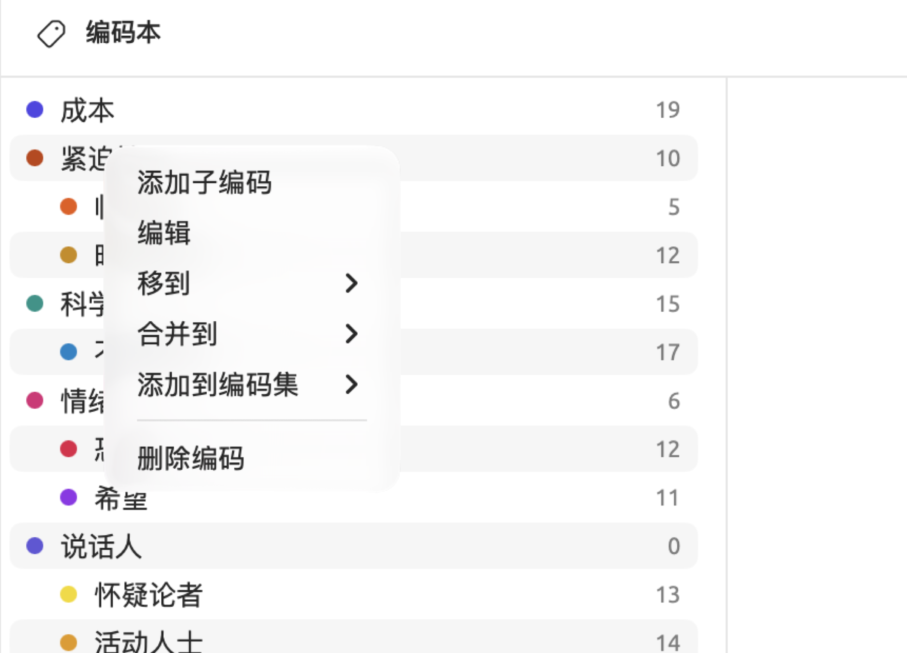
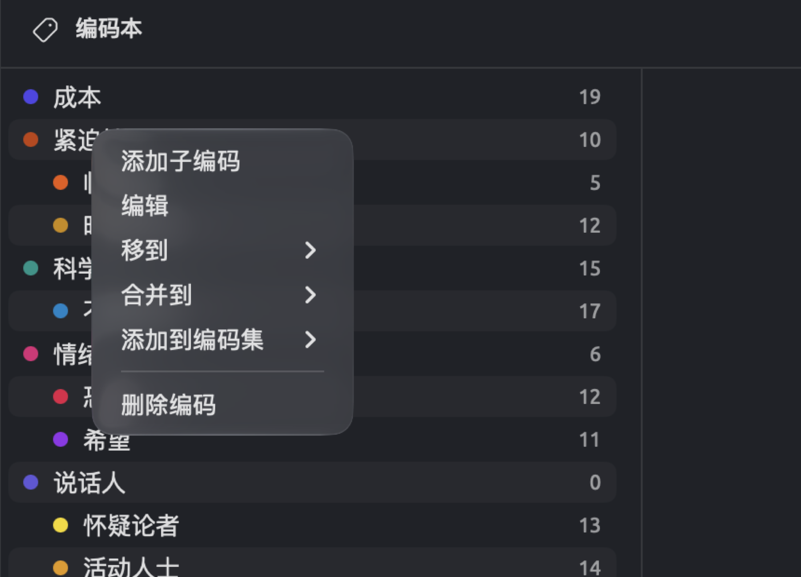
子编码可以在相关的编码之间建立层级。如果你的研究中有许多相近的编码，希望按逻辑归在一起，这会很有帮助。
为文字编码
- 点按“时间不多了”的标签页。
- 选中一段文字，例如“一个在所有现任官员都退休之后才到期的期限，根本算不上期限。”
- 在阅读器底部出现的栏中点按编码。
- 在编码列表中点按“时间节点”。
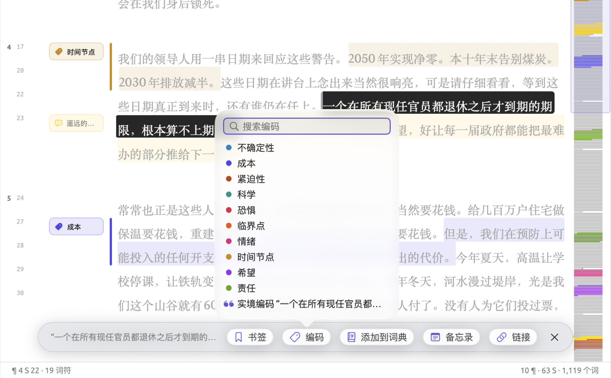
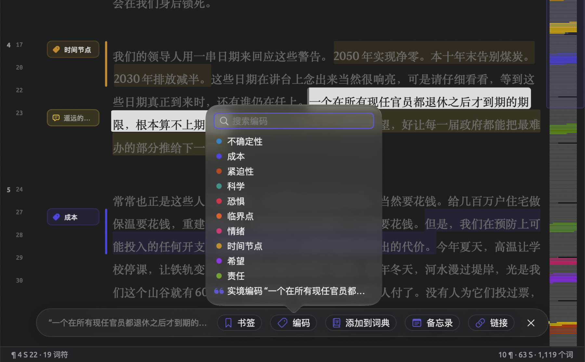
这段文字随即显示为“时间节点”的颜色。此外，文字左侧还会出现一条同色的竖条。你可以继续浏览当前打开的列表中的编码，再为这段文字应用第二个编码，或者按下 Esc 键关闭编码列表。如果编码本中有很多编码，输入编码名称的开头几个字就能找到想要的那一个。如果输入的名称与现有的任何编码都不匹配，列表会提供一个名为添加编码“…”的选项，可以一步创建并应用这个编码。
点按段落旁边的编号，无须手动选择文字，就能选中整个段落。文档 ▸ 编码（⇧⌘C）会打开同一个编码列表。编辑 ▸ 撤销应用编码（⌘Z）会撤回最近一次为任意文字所做的编码。以后要移除某个编码，可以再次选中这段文字，这时你会看到列表中已分配的编码旁边带有勾号；取消勾选即可移除这个编码。
你应该在每份文本中再为几段文字编码，因为接下来的示例需要有编码，才能统计和可视化。编码一章进一步介绍了备忘录、链接和书签的用法。那一章还介绍了自动编码，用于一次为多段文字编码。
比较行动派和怀疑派
编码矩阵是一张表格。每个文档占一列，你创建并使用过的每个编码占一行。矩阵中的每个单元格给出该列的文档中带有该行编码的文字片段总数。按某个属性给编码矩阵分组，矩阵就变成了各组文档之间的比较。
- 在项目下点按编码矩阵。
- 在显示文档的菜单中选取属性。
- 在旁边出现的菜单中选取“立场”。
- 在下方那排按钮中点按文档。
- 在旁边的切换控件中点按 %。
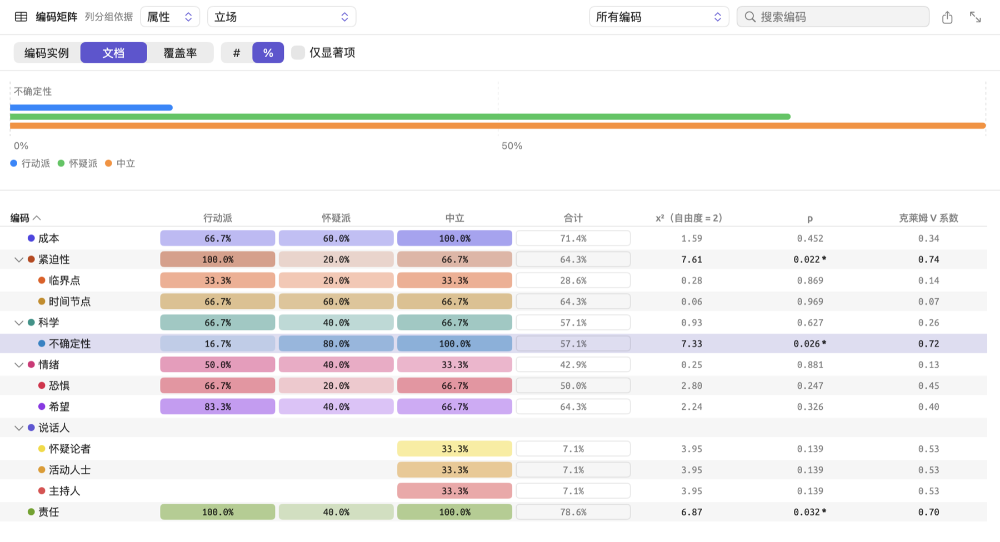
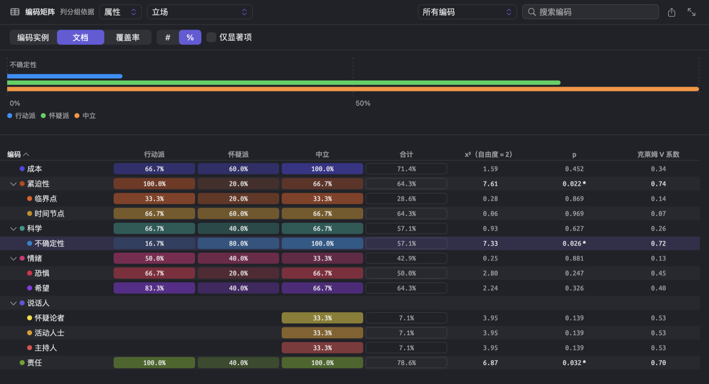
选中 % 后，每个单元格表示某一组文档中至少出现过一次某个编码的文档所占的百分比。在表格中选中一个编码，表格上方会以条形图显示各组的这些数值。在“气候辩论”项目中，“不确定性”编码只出现在六篇行动派文本中的一篇里，因此行动派的单元格显示 16.7%。五篇怀疑派文本中，有四篇至少含有一段带“不确定性”编码的文字，因此怀疑派的单元格显示 80.0%。另外请注意，“气候辩论”示例项目的表格中有一列“中立”，因为其中包含对气候变化持中立立场的文档。这些文档是热浪报告、新闻报道和电台辩论。
编码实例表示编码片段的数量，覆盖率则按字符计算文本中有多少内容带有编码标注。无论选择哪种度量，表格最后几列都会对各组进行相互检验。每项检验评估的是，各组在含有某个编码的文档比例上的差异能否单凭偶然来解释。当前项目包含十一份文档，分为“行动派”和“怀疑派”两组。比较中只有两组时，表格用 Fisher 精确检验对它们进行检验，并给出 p 值（p（Fisher 精确检验））。不过，“气候辩论”示例项目有三组。因此，表格改用卡方检验来检验差异，并给出统计量（χ²（自由度 = 2））和相应的概率（p）。
假设立场完全不起作用。那么，一个编码的 p 值表示的就是，在立场并未造成任何真实差异的情况下，单凭偶然得到观察到的差异或更大差异的概率。p 值小于 0.05 时，单凭偶然产生这样的差异，二十次试验中还不到一次。因此，显著的结果会以更深的颜色显示，相应的 p 值旁边还会加一个星号（*）。启用仅显著项后，表格只保留差异显著的编码。这些差异的强度用克莱姆 V 系数来衡量，范围从 0 到 1（从没有差异到最大差异）。请把颜色较深的检验值当作更仔细地查看相应文字的理由。
在导航栏中，编码统计就位于编码矩阵的正上方。表格中的每一行是你用过的一个编码，显示每个编码覆盖了多少文字片段和多少文档，以及占全部字符的百分比。第 13 章“编码分析”进一步讨论了这两个视图，并附有检验的示例。
为一个词做词汇速写
词汇速写展示一个词在语法上与哪些其他词组合。这些词按关系分类。关系指的是两个词之间的语法联系。第 12 章“词汇速写”介绍了所有关系。例如，以某个词为宾语的动词构成一种关系，修饰这个词的形容词则构成另一种关系。
- 在项目下点按词汇速写。
- 在词栏中输入
气候，然后按下 Return 键。 - 如果当前选中的是其他模式，请点按标签页顶部栏中的语法。
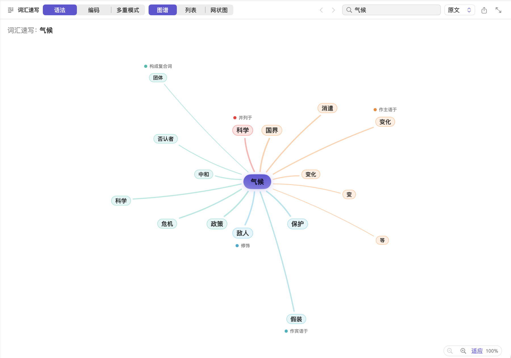
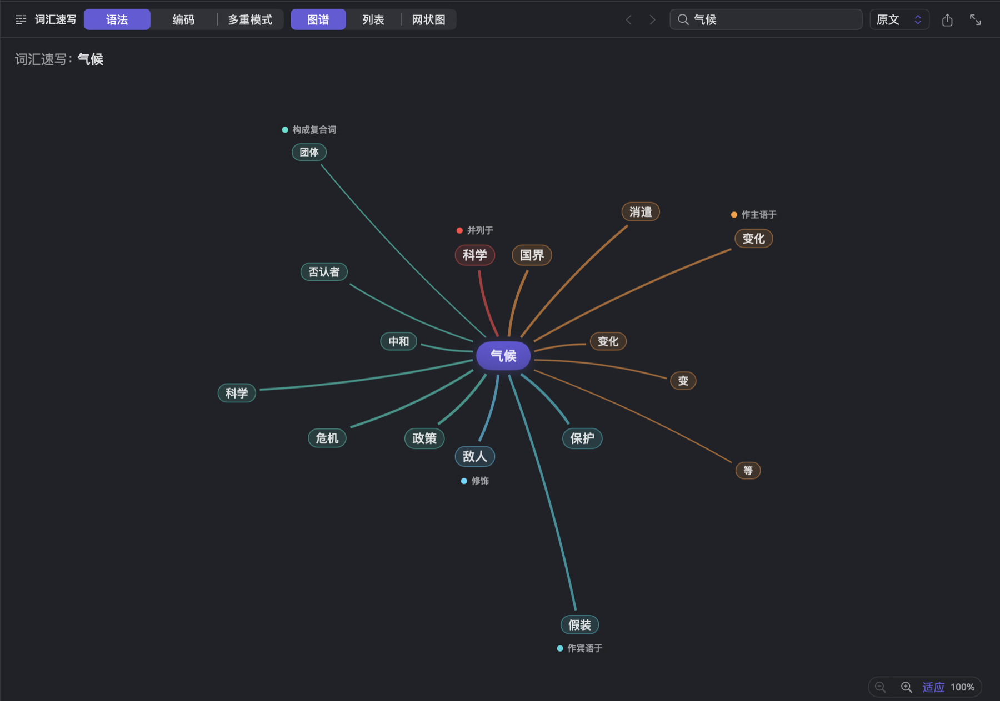
在图谱中，气候位于中心，它的搭配成分按关系排布在周围。每种颜色代表一种关系。变化位于作主语于下，因为在“气候在变化”中，气候是它的主语。危机是构成复合词下列出的词之一，如“气候危机”。在同一种关系中，搭配成分的字号越大，表示它与中心词的联系越强。
衡量这种联系强弱的指标称为 logDice 得分，计算方法见logDice一节。logDice 得分表示，在这两个词的全部用法中，有多大份额来自它们作为一对出现的情况。可以把这个得分看作搭配的一种数学表达。logDice 得分最高为 14，即两个词只与彼此一起出现时的值。比 14 每低 1 分，这个份额就减半。将鼠标指针悬停在任意一个搭配成分上，可以看到 logDice 得分及其旁边的 f；这里的 f 代表频次。这个值表示这两个词一起出现的次数。
点按任意一个搭配成分（例如危机），就会转而显示这个词的速写。要回到气候，请在速写上方那一行中点按它，或者按下 ⌘[。要查看某个搭配成分背后的句子，请点按速写上方的列表，然后选中这个搭配成分所在的行。LemmaLoom 会直接带你转到把这两个词联系起来的第一个句子。点按词汇速写标签页即可返回；再点按同一行，就能继续查看同时含有这两个词的其他句子。
找出行动派的关键词
有些词在一个文档集中出现的频率往往明显高于另一个文档集，另一些词出现的频率则明显较低。关键词列表会在这两个方向上突出显示出现频率的差异。请比较“行动派”与“怀疑派”的关键词。
- 在导航栏的文档集下点按“行动派”。这个文档集会在一个标签页中打开。
- 在标签页顶部的那排按钮中点按查询。窗口较窄时，这排按钮会变成一个菜单，请从中选取查询。
- 在左侧一栏的模板下点按关键词。
- 这一栏的右侧是查询构建器。它由一个个称为条件的方框组成。第 15 章“构建查询”对两者都有介绍。在显示条件中，把显示项目其余部分的菜单设为文档集。
- 在下方出现的菜单中选取“怀疑派”。
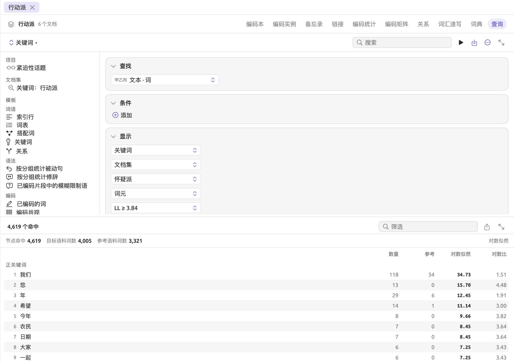
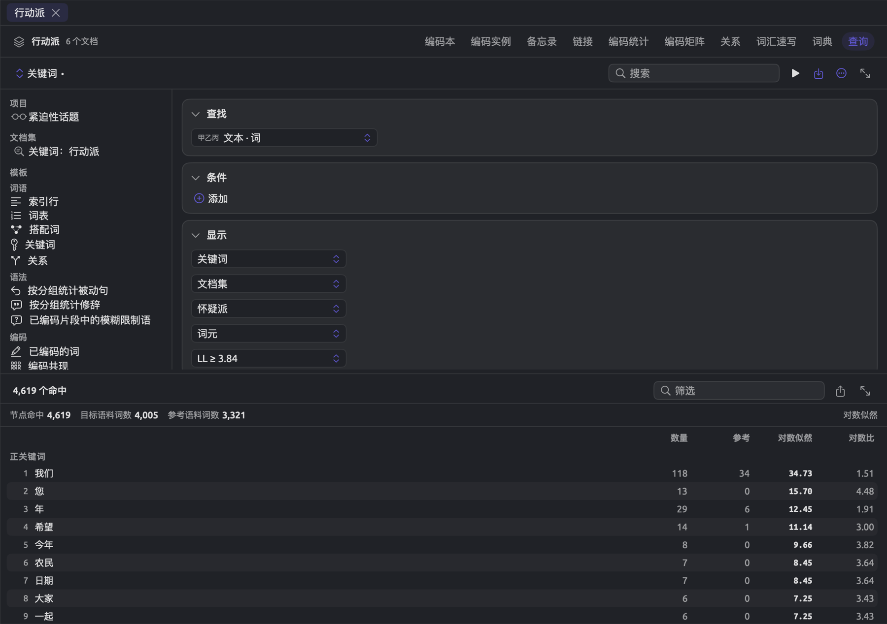
让显示词元的菜单保持不变，这样英文中的 cost 和 costs 都会算作 cost。显示 LL ≥ 3.84 的菜单也保持不变。缩写 LL 代表对数似然得分。单凭偶然，得分大于或等于 3.84 的情况大约每二十次试验中只出现一次。得分较低的词都会从结果列表中略去。
结果显示在构建器下方，并随着你修改参数而更新。在较大的项目中，请点按构建器上方的三角形图标，或者按下 ⌘R，手动运行查询。
正关键词列出行动派比怀疑派用得更多的词，负关键词列出他们用得更少的词。在这次比较中，“行动派”是目标语料，“怀疑派”是参考语料。表格上方的一行告诉你每个文档集中一共统计了多少个词，分别标为目标语料词数和参考语料词数。在表格中，一个词在“行动派”文档集中出现的次数显示在数量中，在“怀疑派”文档集中出现的次数则显示在参考中。
两个列表都按对数似然排序。排在任一列表前列的，是差异最不可能纯属偶然的词。对数比表示差异的程度，计算时已考虑两个文档集的总体大小。值为 1 表示使用频率是对方的两倍，2 表示四倍，3 表示八倍，依此类推，每多 1 就再翻一番。负关键词的比值小于零，−1 表示使用频率只有对方的一半。第 16 章“查询结果与统计”中的关键词一节一步步演示了这两个得分的计算。
关键词列表能让你看到哪些词与众不同，却无法告诉你它们为什么突出。请分析这些词在文字中出现的上下文。
要存储这个关键词查询，请按以下步骤操作：
- 在构建器上方的栏中，点按带有一个方框和一个指向框内箭头的按钮。它的悬停提示为存储。
- 选取存储。
- 在存储查询对话框中，把名称中的文字换成
关键词：行动派。可用范围保持为文档集。 - 点按存储。

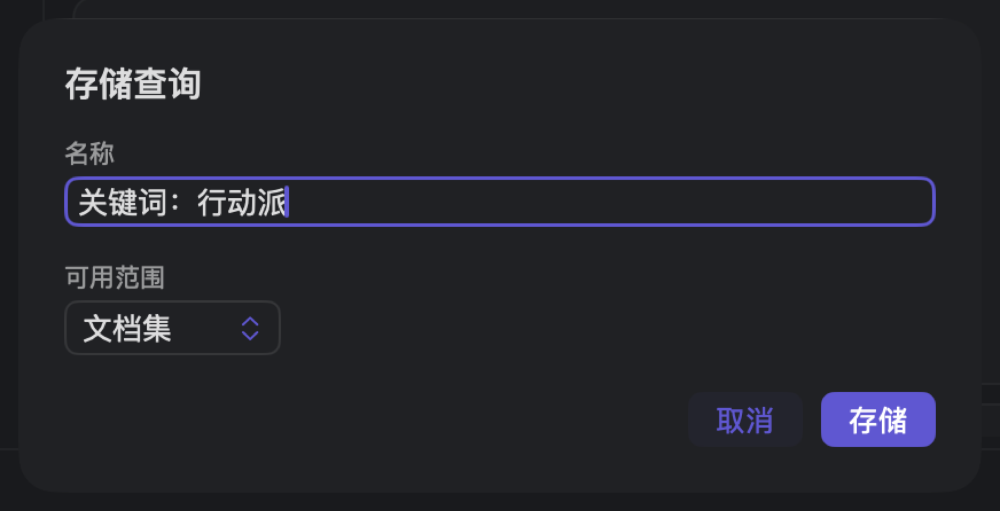
此后，每当你打开“行动派”文档集中的查询，存储的查询都会出现在左侧一栏顶部的文档集下。点按这一项，就会恢复你之前看到的关键词列表。示例项目中，这里已经有一个存储的查询。
导出表格
关键词列表可以导出为逗号分隔值（.csv）文件，供电子表格应用使用。
- 在结果上方的栏中点按导出按钮，它是一个方框加一个向上的箭头。它的悬停提示为导出。
- 选取 CSV。
- 选择一个文件夹，然后点按保存。


文件中每一行包含一个关键词，以及它的次数和得分，并注明它是正关键词还是负关键词。这里的格式是逗号分隔值（CSV），这是一种简单的纯文本表格格式，许多应用都支持它，包括电子表格和统计软件。同一个菜单中导出下的其他菜单项可以把结果导出为图片（PNG 和 PDF）或 Markdown 文件（Markdown 格式把结果文件与所用查询的元数据合在一起），也可以把结果拷贝到剪贴板（拷贝）。
大多数表格和图表都像这里一样提供导出选项。第 22 章“交换与导出”中的导出表格和图表一节更详细地介绍了各个导出菜单的作用，以及它们出现在哪里。
要查看某个关键词的索引行，请点按左侧一栏模板下的索引行。借助索引行功能，你可以逐一查看这个词的每一次出现，以及它在周围文本中紧邻的上下文。第 16 章“查询结果与统计”中的索引行一节进一步讨论了这个话题；第 17 章“查询模式与发现”中的模板一节说明了如何选择要查看的词。
接下来读什么
帮助 ▸ 术语表会打开一个术语表窗口，其中有 LemmaLoom 术语的简短解释。处理文档时，你可以让它一直开着，随时查阅不熟悉的缩写或专业术语。
| 要做的事 | 请阅读 |
|---|---|
| 了解窗口的每个部分，以及你的工作保存在哪里 | 开始使用 |
| 导入 PDF 文件、网页和录音 | 导入资料 |
| 在阅读器中查找、选择和编辑文本 | 阅读与编辑 |
| 了解每个透镜标注什么 | 透镜 |
| 撰写备忘录、链接文字片段、进行自动编码 | 编码 |
| 按立场、媒体或日期划分项目 | 文档集、分组、标签和属性 |
| 翻译一份文本，并与原文对照阅读 | 译文与分屏浏览 |
| 统计编码、绘制图表并进行检验 | 编码分析 |
| 研究一个词在语法上的搭配成分 | 词汇速写和速写空间 |
| 查找词、短语和语法模式 | 构建查询和查询模式与发现 |
| 在报告一个得分或检验之前先弄懂它 | 查询结果与统计和统计量一览 |
| 跨多个项目分析材料 | 第 3 章“项目与文档”中的跨项目工作 |
| 建立词表（例如模糊限制语），并统计其中的词 | 词典 |
| 共享项目，或把它转移到另一台 Mac | 交换与导出 |
| 查找键盘快捷键 | 键盘快捷键 |